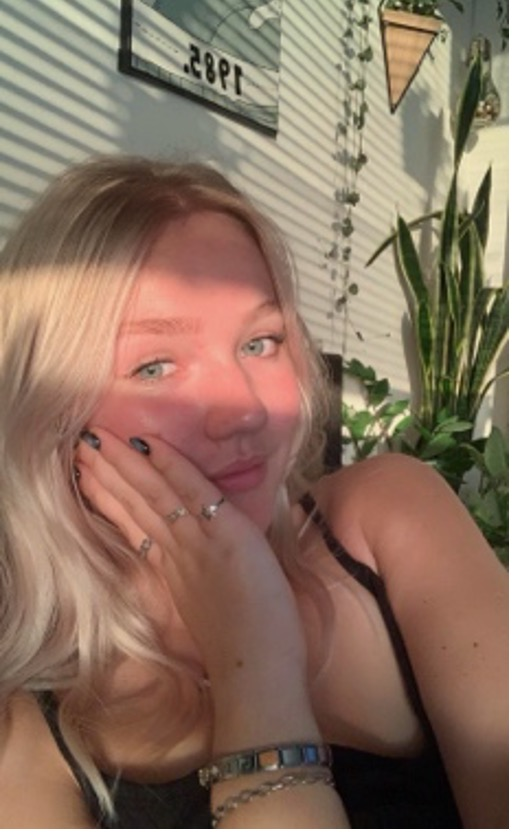
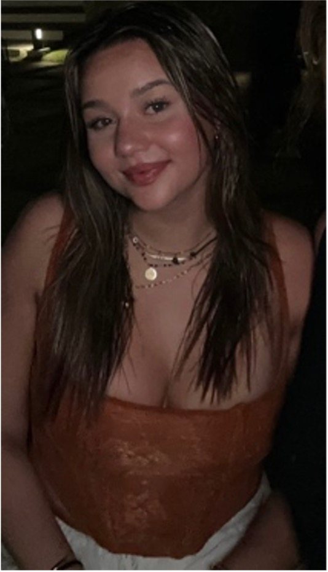

Over ons
Leuk dat jullie op de site zijn gekomen van onze podcast!
Wij zijn Roos, Demi en Iris en het idee voor deze podcast begon toen we voor een schoolproject een podcast moesten maken. We vonden dat we met ons onderwerp ook daadwerkelijk mensen konden helpen dus zodoende zijn we de podcast ook gaan publiceren! We hebben voor dit onderwerp gekozen omdat we dit passend vonden voor onszelf, maar daarom juist ook voor heel veel andere nieuwe aankomend studenten.
Hoi mijn naam is Demi, ik ben 20 jaar en geboren in Alkmaar. Ik woon al mijn hele leven tot nu nog steeds in Spanbroek, bij mijn ouders. Ik vind het leuk om te sporten, met vrienden af te spreken en om creatief bezig te zijn. Dit is mijn eerste jaar CMD op het HvA. Ik vond het heel spannend om aan iets nieuws te beginnen, daarom ben ik vooraf meegegaan met het introkamp van onze studievereniging IamCore. Dit heeft mij best een beetje opweg geholpen met alle nieuwe dingen die te wachten stonden. Het leek mij leuk om nieuwe CMD studenten een handje te helpen bij de opstart op een leuke informatieve manier.
Hallo, mijn naam is Roos, ik ben 18 jaar en ben geboren in Amsterdam. Ik woon momenteel met mijn ouders in Huizen. Ik hou van gezelligheid, festivals, muziek en terrassen. Dit jaar ben ik begonnen aan mijn eerste jaar CDM aan de HVA. Deze tijd ervaarde ik als super spannend en onduidelijk. Hierom leek het mij leuk om op een spontane, informatieve en toch grappige manier nieuwe CDM studenten te informeren over wat hen te wachten staat.